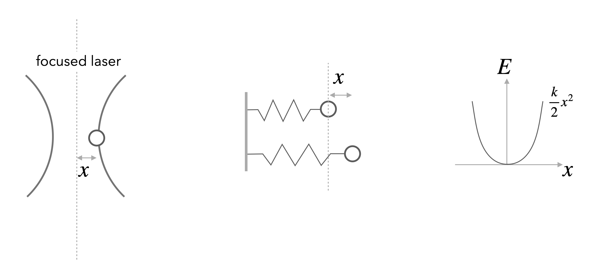

This page was generated from notebooks/L3/1_Equipartition.ipynb.

Equipartition¶
In the previous section, we showed how the probability distribution for a system with average energy \(\langle E \rangle\) could be guessed by using the principle of maximum entropy. However, to finish that calculation, we need to determine the meaning and significance of the Lagrange multiplier \(\beta\). We can derive a value for \(\beta\) with the help of the equipartition theorem.
The equipartition theorem, also known as the law of equipartition, equipartition of energy or simply equipartition, states that every degree of freedom that appears only quadratically in the total energy has an average energy of \(\frac{1}{2}k_B T\).
To obtain the Lagrange parameter we just consider one degree of freedom for a monoatomic gas. This degree of freedom is the kinetic energy of one atom along the x-direction, which is given by
\begin{equation} E=\frac{p_{X}^{2}}{2 m} \end{equation}
According to the Boltzmann distribution, the probability to find an atom with a certain momentum is given by
\begin{equation} P\left(p_{x}\right)=\frac{\mathrm{e}^{-\beta\left(p_{x}^{2} / 2 m\right)}}{\sum_{\text {states }} \mathrm{e}^{-\beta\left(p_{x}^{2} / 2 m\right)}} \end{equation}
We can thus calculate the mean energy by summing up (or integrating when going to continuous states) over alls possible momenta
\begin{equation} \sum_{\text {states }} \rightarrow \int_{-\infty}^{\infty} \mathrm{d} p_{x} \end{equation}
This yields
\begin{equation} \int_{-\infty}^{\infty} \mathrm{e}^{-\beta p_{x}^{2} / 2 m} \mathrm{~d} p_{x}=\sqrt{\frac{2 m \pi}{\beta}} \end{equation}
To obtain the value of \(\beta\) we now constrain the mean energy to the value given by the equiparition principle
\begin{equation} \langle E\rangle=\frac{1}{2} k_{\mathrm{B}} T \end{equation}
This is the mean energy per degree of freedom. One can show that each degree of freedom, independent of the object (atom, colloid, parking car) is carrying this mean energy. It provides actually our measure of temperature.
Using the momentum to calculate the mean energy we write down
\begin{equation} \langle E\rangle=\frac{\int_{-\infty}^{\infty} \frac{p_{x}^{2}}{2 m} \mathrm{e}^{-\beta\left(p_{x}^{2} / 2 m\right)} \mathrm{d} p_{x}}{\sqrt{2 m \pi / \beta}} \end{equation}
which can be slightly simplified
\begin{equation} \langle E\rangle=\frac{\alpha^{3 / 2}}{\beta \sqrt{\pi}}\left(-\frac{\partial}{\partial \alpha}\right) \int_{-\infty}^{\infty} \mathrm{e}^{-\alpha p_{x}^{2}} \mathrm{~d} p_{x} \end{equation}
and calculated via some tricks valid for integrals over Gaussian functions. This finally leads us to the result that the value of the Lagrangian multiplier must be
\begin{equation} \beta=\frac{1}{k_{\mathrm{B}} T} \end{equation}
A good example for a non-quadratic degree of freedom is the barometric height formula with a potential energy that is linear in position.
Equipartition is useful in many ways. The fundamental degrees of freedom, e.g. the vibrations of a single molecule are quadratic in the bond length. Similarly all rotational degrees of freedom are as well. Their occupation is determined by a Boltzmann distribution and readily visible in molecular spectra. On more macroscopic scales it is very useful in the field of force measurements using optical tweezers.
Example: Two-level-system
As another frequent application of Boltzmann’s law are state populations of two state systems, as we find them frequently in physics, e.g., for spin systems. Such two level spin systems are, for example, very important for nuclear magnetic resonance (NMR), which is an important tool to study the structure and dynamics of soft matter.

Consider the image above, where a single energy level at zero magnetic field (\(B=0\)) splits into two energy levels due to the interaction of a proton spin (red arrow) with the external magnetic field.
The magnetic moment of the proton spin may take two expectation values in the magnetic field, which are characterized by the magnetic quantum number \(m_Z=\pm 1/2\). The magnetic moment projected along the magnetic field direction is then
and the energy of the states
with \(\gamma=2.675222005\times 10^{8}\; \mathrm{s}^{-1} \mathrm{T}^{-1}\) being the gyromagnetic ratio of the proton. The energy difference for a nonzero magnetic field is therefore given by
which results for a magnetic field of \(B=1\; \mathrm{T}\) in \(\Delta E\approx 1.76\times 10^{-7}\;{\rm eV}\) or a Larmor frequency of \(\omega_\mathrm{L}=42\; {\rm MHz}\). This energy difference is almost negligible as compared to the thermal energy at room temperature \(k_\mathrm{B}T=2.6\times 10^{-2}\;{\rm eV}\). Yet, this small energy difference is used to give the contrast in NMR and related techniques such as MRI.
Using the Boltzmann distribution we can now calculate the ratio of the population of spins in the lower or excited state
which is very close to one:
If you consider now a volume of \(V=1\;{\rm {\mu m}}^3\) water, then you would roughly have about \(N=6.7\times 10^{19}\) protons. This then means that the excess number of protons in the excited state is just \(N_{+\frac{1}{2}}-N_{-\frac{1}{2}}=4.5\times 10^{12}\), which is extremely low. Thus, to detect something in NMR or MRI, a certain number of protons in the volume is required.
Example: Position of a Bead in an Optical Tweezer
In an optical tweezer, a polarizable object (e.g. a polymer bead) is hold in the intensity gradient of a focused laser beam. The nearly Gaussian intensity distribution of a focused beam leads, in first approximation to a linear force a parabolic potential and can be employed to measure tiny forces.
For one dimension of the 3D optical potential it can thus be written as
\begin{equation} F=-k x \end{equation}
and
\begin{equation} E=\frac{1}{2}k x^2 \end{equation}
Using the Boltznmann distribution for the potential provides the probability distribution for finding the particle at a certain position \(x\)
\begin{equation} p(x)=\frac{1}{Z}\exp\left(-\frac{kx^2}{2k_B T} \right) \end{equation}
which resembles a Gaussian distribution with a variance of
\begin{equation} \sigma^2=\langle x^2 \rangle =\frac{k_B T}{k} \end{equation}
We also readily recognize that the partition function \(Z\) is the normalization factor of the Gaussian
\begin{equation} Z=\sqrt{2\pi }\sigma=\sqrt{2\pi\frac{k_B T }{k}} \end{equation}
The mean potential energy is then calculated by
\begin{equation} \langle E \rangle =\int_{-\infty}^{\infty} E\, p(x)\,dx=\frac{1}{2}k\int_{-\infty}^{\infty} x^2 p(x)dx=\frac{1}{2}k \frac{k_B T}{k}=\frac{1}{2}k_B T \end{equation}
With the help of the variance of the distribution mentioned above, we also recognize that the trap stiffness can be obtained by dividing th ethermal energy \(k_B T\) by the variance of the positional fluctuations.
\begin{equation} k=\frac{k_B T}{\langle x^2\rangle } \end{equation}
The second degree of freedom of a particle in an optical tweezer is given by its velocity \(v\). This is as well a quadratic degree in \(v\), yet its measurement turns out to be tricky. As the particle is carrying out Brownian motion in the trap, its velocity is not given by the difference of positions divided by the difference in observation times. To measure the velocity accurately one has to got to very short times, when the particle is carrying out ballistic motion. This has been achieved only about 10 years ago, while the distribution connected to the velocities, the Maxwell-Boltzmann distribution is already known for a very long time.
Take some time to have a look at the Maxwell-Boltzmann distribution again.
When a Macrostate is a Microstate¶
In practice, we are often interested in the likelihood that the system is in a state that is described by some macroscopic parameter \(X\) that we can measure. For example, for a DNA molecule inside a cell, an interesting quantity, which can be measured using fluorescent markers, is the distance R between two sites on the DNA chain. Repeated measurements of \(R\) can to construct the probability distribution p(R).
In general, the probability of the macrostate \(X\) is given by the sum of probabilities of all the microstates of the system that adopt the specified value \(X\),
\begin{equation} p(X)=\sum_{i_{X}} p_{i}=\sum_{i_{X}} \frac{1}{Z} \mathrm{e}^{-\beta E_{i}} \end{equation}
For the DNA example, the sum in the above equation would run over only those microstates \(i_X\) that have the prescribed distance between the two labeled sites on the polymer, e.g. \(X=R\). Using the basic relation between the partition function and the free energy, \(G = −k_BT \ln(Z)\), we can express the probability of the macrostate X as
\begin{equation} p(X)=\frac{1}{Z} \mathrm{e}^{-\beta G(X)} \end{equation}
where
\begin{equation} G(X)=-k_{\mathrm{B}} T \ln \left(\sum_{i_{X}} \mathrm{e}^{-\beta E_{i}}\right) \end{equation}
is the free energy of the macrostate \(X\). Note that the formula for \(p(X)\) is identical to the Boltzmann formula for the probability of a microstate, with the energy of the microstate replaced by the free energy of the macrostate. Note that the sum on the right side of the last equation is not the partition function \(Z\) but that of the subensemble of microstates fulfilling the condition X, i.e. \(Z_X\). Similarly, when writing down the states and weights for the macrostates \(X\), the energy is replaced by the free energy, as shown in in the figure below. In this sense, one person’s macrostate is truly another person’s microstate.